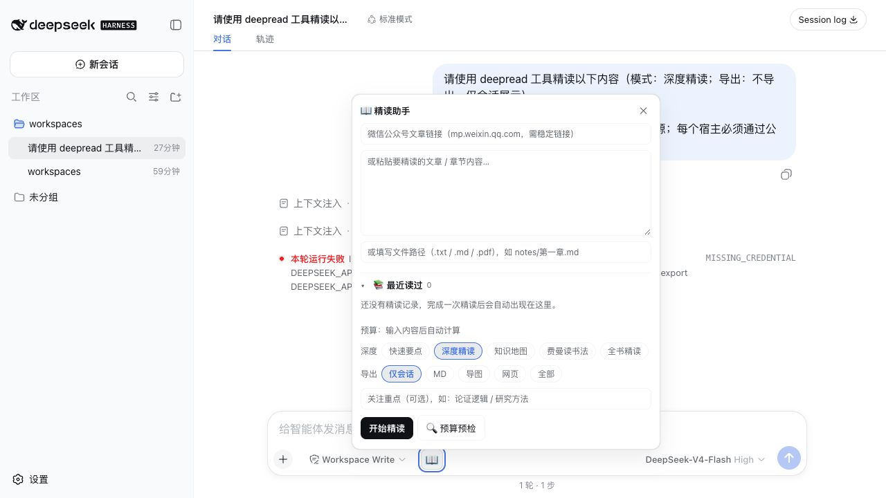
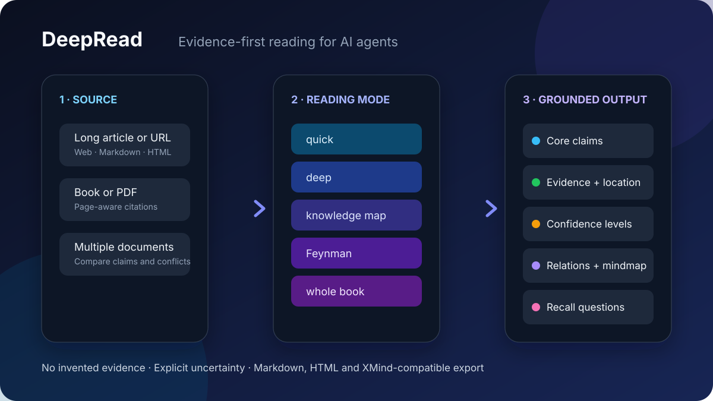

先判断这篇内容值不值得继续读
几分钟内抓住问题、结论和关键概念
输出一句话总结、核心论点、主要论证、值得保留的引文和批判性问题。单次调用，适合阅读前筛选。
摘要帮你少看一点
一份流畅的摘要仍可能混在一起：作者原意、原文事实、模型推断和无法确认的内容。DeepRead 把这些边界重新拆开，让每个重要结论都有机会回到原文接受检查。
AI 阅读真正缺的不是更强的概括能力，而是清晰的事实边界。
证据优先
真实界面
完整插件会先预估不同阅读模式需要的 token 与时间。长文和大 PDF 转为后台任务后，会逐页显示解析进度、逐段显示精读进度，也可以随时取消。

按阅读目标选择
先判断这篇内容值不值得继续读
输出一句话总结、核心论点、主要论证、值得保留的引文和批判性问题。单次调用，适合阅读前筛选。
认真读懂一篇文章
长文自动分段，逐段整理观点、论据、引文和章节要点，最后汇总核心概念与批判性思考。
研究、核查与引用前整理资料
输出十类内容、关键数据表、八种关系、四档置信度、Mermaid 导图、XMind 大纲和主动回忆问题。
真正学会并能讲给别人听
完成提问、分章精读、合上原文复述、自检、回原文纠错，再安排第 1、3、7、14、30 天复习。
处理整本书和超长文档
按部分处理长文本，提取目录与章节脉络，再将分部分精读结果组装成全书总结。
真实阅读场景
找出文章的核心主张、数据依据和隐藏前提。原文没有证据时直接标明，不替作者补答案。

保留页码标记，把论点、引文和数据定位回原文。
一次比较 2-10 篇材料，整理共识、冲突与互补证据。
从理解内容继续走到闭卷复述、查漏纠错与间隔复习。
仓库内可复现
两种安装形态
Codex、Claude Code 与 Agent Skills
零运行时依赖。由当前 Agent 使用自己的文件与网页工具，执行同一套证据优先阅读方法。
npx skills@latest add xiehuan123/dsh-deepread
DeepSeek Harness Web
增加阅读面板、PDF 提取、后台任务、进度、缓存、预算预检、批量对比和多格式导出。
dsh plugin --profile web add dsh-deepread
DeepRead 不是自动事实裁判。它帮助你看清原文说了什么、依据在哪里、还有哪些内容无法确认，最终判断仍然属于读者。
扫描版 PDF 建议先做 OCR。知乎、掘金等反爬站点建议粘贴正文。长材料建议先做预算预检。
常见问题
普通摘要主要压缩内容。DeepRead 会进一步整理观点、证据、数据、关系、置信度和原文位置，并明确标记原文没有提供证据的内容。
支持带文本层的中文 PDF。完整插件内置纯 JavaScript 提取器，并保留页码标记。扫描版 PDF 建议先完成 OCR。
可以。便携 Agent Skill 可安装到 Codex、Claude Code 和其他兼容 Agent Skills 的工具，Skill 本身没有运行时依赖。
完整插件支持微信公众号稳定链接。遇到反爬验证时需要配置 HTTP provider，或者直接粘贴正文。其他反爬站点建议粘贴文本。
可以。完整插件支持 Markdown、HTML 和 FreeMind 格式，FreeMind 文件可以导入 XMind。便携 Skill 也可以按指令导出同类成果。
拿一篇真实材料试试看